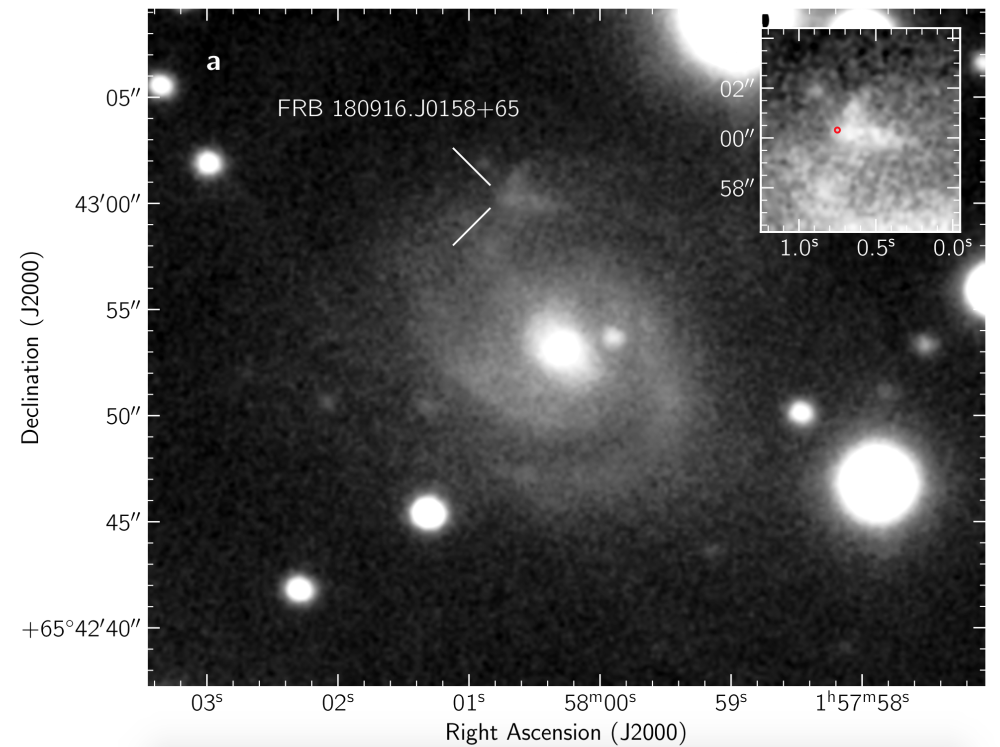

FRB 180916
Image from Marcote et al., 2020, Nature, 577, 190
Summary
- Detected by: CHIME
- FRB coordinates (RA, Dec): 01:58:00.75 +65:43:00.32 (J2000)
- Host coordinates (RA, Dec): 01:58:00.28 +65:42:53.0 (J2000)
- Redshift: 0.0337
- Observed DM: 348.76 pc cm-3
- Repeating: Yes
- References: Marcote et al., 2020, Nature, 577, 190;
CHIME/FRB collaboration 2020, Nature, 582, 351
Host galaxy properties
| Quantity | Measured value | Unit |
|---|---|---|
| Stellar mass | (2.15 ± 0.33) × 109 | M⊙ |
| Star formation rate | 0.06 ± 0.02 | M⊙/yr |
| E(B-V) | 0.12 ± 0.01 | mag |
| Mass-weighted age | 154.9 | Myr |
| Absolute r-band mag. | -19.46 ± 0.05 | mag |
| u - r color (rest-frame) | 1.53 ± 0.06 | mag |
| Half-light radius | 3.57 ± 0.36 | kpc |
| FRB offset from galaxy center | 5.46 ± 0.01 | kpc |
Emission line fluxes
| Emission line | Measured value |
|---|---|
| Hα | 40.3 ± 0.2 |
| Hβ | -- |
| [OIII] λ 4959 | 5.91 ± 0.62 |
| [OIII] λ 5007 | 71.6 ± 0.6 |
| [NII] λ 6584 | 15.2 ± 0.2 |
Photometry
| Telescope | Filter (eff. wavelength) | Magnitude |
|---|---|---|
| SDSS | u (355 nm) | 20.31 ± 1.78 |
| SDSS | g (469 nm) | 17.08 ± 0.08 |
| SDSS | r (617 nm) | 16.17 ± 0.03 |
| SDSS | i (748 nm) | 15.93 ± 0.02 |
| SDSS | z (893 nm) | 15.85 ± 0.06 |
| WISE | W1 (3.4 μm) | 14.37 ± 0.03 |
| WISE | W2 (4.6 μm) | 14.41 ± 0.05 |
| WISE | W3 (12.1 μm) | 10.56 ± 0.08 |
| WISE | W4 (22.2 μm) | 9.08 ± 0.52 |